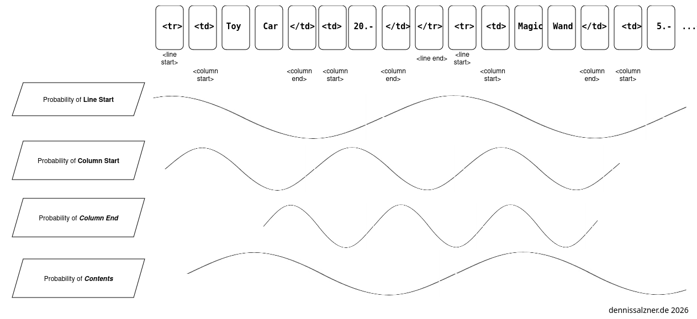
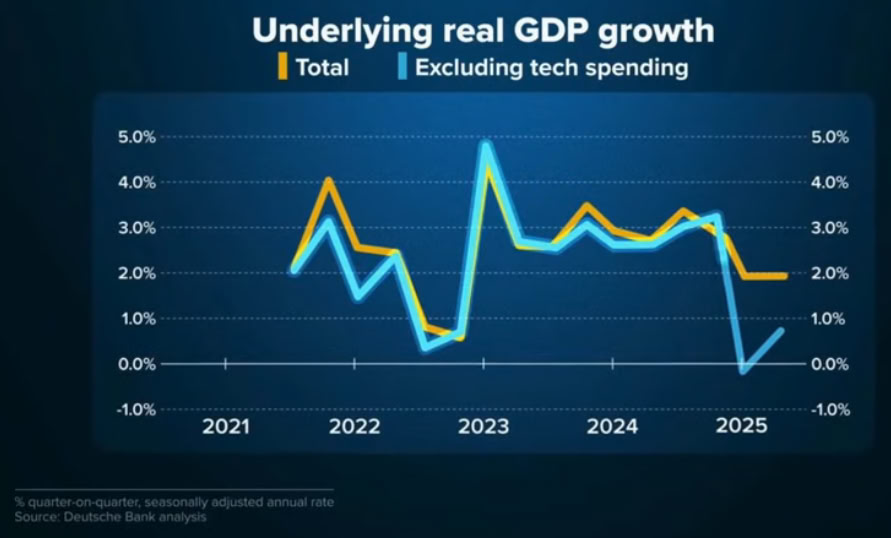

What
To look beyond what we call “Artificial Intelligence (A.I)” or even “Artificial General Intelligence” (A.G.I), it makes sense to first understand the underlying technologies, where it came from and what it is good for or maybe isn’t. From this understanding as a basis we can then extract real world value. In the following I will explain it as basic, with the fewest words and as easy to comprehend as I can. We will then look into possible sustainable real world uses of the technologies.

Contents
Contents
When
“A.I” often means “Large Language Model”
First off you may have already heard that what we are colloquially referring to as “A.I” is in the most cases actually a “Large Language Model (LLM)”. ChatGPT, DeepSeek, Claude, Gemini are all actually “Large Language Models”.
What is a Large Language Model?
Well, in the field of “natural language processing” linguistic researchers and computer scientists have been working side by side to study how language historically evolves, but also the patterns in human language.
To do this they have always collected large sets of texts, so called corpora. On the corpora we can then run statistics to answer questions such as what is the probability of a word appearing? This by itself is already useful for spelling and grammar checking.
Later it was discovered that these probabilities of words appearing can also be used to generate text.
How
The Concept: Generating Text with Transformers
Enter the transformer, the foundation of an LLM.
The first Syllable
What if we could design a system that, for a given text, produces the next syllable?
Architecturally this would look something like this:
So great. With a well trained transformer we see a high statistical probability the system produces the next syllable that fits given the previous text. Not considering meaning at all. Meaning will hopefully transpire from the text it was trained on.
More Syllables
So how do we produce more text? Easy. We just run it again and again. Always concatenating the output with the input and re-running it. The output text will grow larger and larger. This is why text loads slowly when using an LLM.
The Underlying Principle that makes the “magic” possible
So how can such a magical syllable producing machine work?
The Melody of Language
First off it’s important to understand that everything around us follows patterns. Whether it’s the reoccurring symmetry of leaves on a plant, the rhyme in a poem, the package header of a Wireless LAN transmission frame. Everything has some underlying pattern, an order, otherwise it would be random and useless.
- with a probability, for instance a Subject is followed by a Verb followed by an Object as in “I drew a picture”.
- or following probability a text stays in a certain domain language. A term from the automotive space will likely be followed by more terms from the automotive space.
So how do we capture this?
Many Periodic Sine Waves
In order to capture the melody of language we need to catch the ordering. To do this we can annotate each word in the training with values of random(!) periodic sine waves. The value of each sine wave at a given location in a text is a large array of numbers between 0 and 1. It contains the values of typically 10.000+ sine waves. These indicate the likeliness of a given next syllable occurring.
The following image demonstrates the simplified case of only predicting the likelihood of a subject, verb or object to follow.

The magic occures when we train an LLM, that is show it text, let it predict and check if it was correct. Then adjust the weighting of the sine waves accordingly.
Handling Advanced Use-Cases, like Tables
At this point some may argue: Oh wait a minute! I can have an LLM transfer a text to a table. If it’s that simple, then how does that work? I hear you, I’ve thought the same. The underlying principle extends far beyond text.
Take this table in HTML and its underlying HTML code for example:

Watch what happens, wenn I put the contents of that table in textual sequence.
The LLM doesn’t need to ‘understand’ anything to produce results. It just learned that there should be a column end within a certain distance to the column start marker. Tables, due to their rigid structure, are actually very easy for an LLM to produce.
Technical Details
The above summary falls short in a lot of details.
-
What I’ve referred to as syllables are more generally tokens in LLM speak. There are different methods of splitting text into tokens. The simplest are splitting to words. A better approach are syllables. Another common method is the subword tokenizer, there is also Byte-Pair Encoding (BPE), WordPiece and SentencePiece tokenization. The Unigram Language Model uses probabilistic approaches to select sub words. Your imagination is the limit. The methods are typically empirically evaluated. What ever works, works.
-
The Periodic Sine Waves or what I called “melody of language” is handled technically by Positional Encoding, which produces a large array of numbers between 0 and 1 that are essentially the value of the sine wave at that position in the text.
-
The Transformer first produces an Embedding. That is a location in a high dimensional latent space.
- This is incredibly powerful by itself. Think a Cartesian coordinate system with many more axes. In this latent space words that relate to each other are near each other.
- You can even do algebraic calculations on coordinates of the latent space. For instance the positions of “King - Man + Woman” yields the position of “Queen”. Also “London - England + Italy = Rome”.
- To convince yourself, you can manually trace the path in the 2D representation produced by word2vec below:

- Encoder-Decoder Networks that were used for the Auto-Encoder were also influential to discovering the Transformer. The Transformer follows this architecture.
- The idea is to train one neural network to “reduce” data and another to “scale back up” data.
- We reduce the difference between input and output (minimize mean square error) until it performs well.
- This can be used for dimensionality reduction like Principle Component Analysis (PCA) (for code samples see Useful A.I. Techniques)
- but also for language translation of text: the latent spaces produced by training on the corpora of texts from two languages align. This is expected when looking at the word2vec representation above. This is exciting, because we can use the encoder trained with one language and using the decoder trained with another to machine translate text.
-
During inference, where the Transformer is used to generate output, we only use the Decoder part. This is because we are essentially moving on a trajectory within the latent space in order to find the sequence of tokens to output.
-
A breakthrough for Transformers was the self-attention mechanism, another set of neural network layers, in order to detect which words have the most meaning and also which words may negate the sentence. For example in “the cat did not run through the entire house”, the words “cat” and “house” are particularly important, but especially the word “not”, as it inverts the entire meaning of the sentence.
Transformer Architecture
How do we implement the Transformer in code? Technically the the Transformer is a cleverly thought out structure of repeating Neural Networks Layers.
We can write it in 100-200 lines of Python Code using the TensorFlow Python library. Following the diagram given in the Paper “Attention is all you need” [1].
Transformer Architecture from [1]
The steps it undergoes to produce text are the following:
-
Split text into tokens, add Positional Encoding (to not loose positional information of where words are related to each another)
-
Run the two through a previously trained Transformer neural network model. The Embedding Layer of the Transformer produces the coordinates in the latent space
-
Run the self-attention mechanism to focus on (=give a higher numerical weight to) the most important words
-
The last layer produces logits, these are run through a softmax function to produce a probability distribution.
-
In order to produce the next token (=”syllable”) of the text we use the resulting probabilities and a decoding strategy (= a selection scheme), for example greedy selection/sampling (just output the token with the highest probability) or the more advanced Beam Search or even Random Sample.
Training
A lot of the innovation lies in the training of Neural Networks. That is observing the output of a Neural Network after feeding it input samples and adjusting the weights to reduce the amount of error (=typically the mean squared error) in the expected output.
In my above simplified analogy this would mean adjusting the weights of the influence of the sine curves to more accurately replicate the melody of language.
Some more fun
Recently there have also been highly interesting results on what happens when one model trains another. That this “surprisingly” produces even better models.
Research has also shown what happens, when we “poison” a model by showing it specially crafted data during training that essentially turns it into a psychopath.
We can also tie certain individual neurons in the network to fixed values to manipulate the entire network such that it will produce text that leans towards a political direction, acts depressive, acts overly friendly or acts cynical and so on. This is akin to “Deep brain stimulation” for humans that is being researched to treat depression or addiction.
Adjacent Technologies: Document Retrieval and Function Calling
In order to use an LLM for something useful outside of a chat bot we need to support basic tasks:
-
Retrieval-Augmented Generation (RAG): The ability to add additional information from a database or an additional text corpus. So we can ask questions about the text and have the LLM summarize text.
-
Tool or Function Calling: The ability to retrieve structured text. For example in a clean JSON formatted output that is guaranteed machine readable. So we can use the LLM as a function in our application code.
For RAG there has been significant innovation in Vector Databases. These have moved beyond just being an additional layer to rational databases to highly optimized purpose build systems.
Limitations
This technology has its limitations by design with some already arguing LLMs have reached a plateau.
I also have yet to find an economically viable real world use case beyond using it as a chat bot that or search engine.
To find actual use-cases it’s helpful to derive what an LLM is good at and what it isn’t good at.
What it can and probably can’t do
Due to the nature of how LLMs currently work:
- there will be no 100% accurate answers
- you will not receive truly novel thought out answers. The LLM only mixes text according to statistics. The answers are sometimes surprisingly correct. Some say like a broken clock that works twice a day.
- it will often produce correct answers, but only due to the original content being in the training set and regurgitating it without having broken it. Of course without citing the source. Which is copyright infringement.
- there is also, by design, a hard limit how ‘smart’ an LLM can be. The larger the model gets the more it turns into an unreliable search engine.
- at the same time what makes an LLM interesting to the user are the hallucinations these are at the same time the plague of LLMs
- the point is that with hallucinations and randomness we may be able to find something that feels novel or is inspiring in the messy output.
Use-Cases: What is it good for? No, not absolutely nothing.
An LLM is useful for some things. Not for others. We are still in a phase collectively finding out where it can produce true business value.
You better not use it for…
- Customer communications: It’s being done already and sure we can fire a few employees, but for customers a text field with automatic search through a well kept FAQ page, will beat an LLM any day of the year. Also in terms of legal risks.
- Emailing Co-Workers: They will eventually notice, the A.I Slop is already wasting everyone’s time. You will destroy your reputation. Additionally you may, again, face legal risks.
- Curing Cancer: This was actually promised when LLMs were introduced to the public. It might work out by accident, if the A.I Slop inspires someone.
You can use it for…
- Summarizing: With the caveat of inevitable grave mistakes.
- Categorizing Text: If the input set is too large to handle otherwise, it may be the best bet.
- Tagging Images: But here special purpose neural networks like You Only Look Once (YOLO) are much more reliable and consume much less resources.
- Vibe coding: But at the risk of copyright infringement and only usable productively for well known code samples without much modification that were in the training set or as a starting point for developers that already know what they are doing.
- Audio Transcription: Here special purpose neural networks like Whisper, used in OpenAI GPT App outperform the LLM for that task.
- Producing Lyrics or Poems: There the melody of language comes into play. Will it be novel or inspiring? Probably not. The LLM has no feelings it wants to express.
- Write School Essays: At the risk of being caught. Then again the teacher probably doesn’t read it, so your A.I Slop won’t be found.
- Improving Text, finding Synonyms: Yes, here it could really shine.
I’ve had successes with:
- using it as a search engine for code samples. It finds hard to find things, but it also produces tons of garbage.
- trying to map a list of names to most probable country of origin in order to guess the language. Often incorrect, but an almost impossible task and better than nothing due to frequent moving between all modern countries.
Economics and Media Coverage
The media coverage was blown completely out of proportion. Either they didn’t know any better or companies were acting this way to generate revenue
Philosophy of “Artificial General Intelligence”
There is a philosophical discussion as to whether our human intelligence isn’t fundamentally doing the exact same thing. When LLMs were introduced there was often talk of “general intelligence”.
But there are key differences of human intelligence to LLMs:
- we are more than one. roughly 8 billion people on earth
- we interact with our environment and adapt
- also to and with each other
- we undergo evolution
- we have personality traits and basic needs that motivate us (see the Maslow Pyramid)
- our nerve system is analogue, not digital.
- we are each heavily biased towards our experiences
- we are self motivated and orders of magnitude more complex, so that we don’t respond to impulses in highly predicable ways.
In doing so we sometimes produce written text. The LLM is merely trained on that text.
I’m sure LLM’s are here to stay, but I believe their use for individuals is highly exaggerated.
Hype, Bubble or even Fraud
We may well be in an end phase of the next cycle of capitalism, where all wealth is concentrated on very few companies and where companies borrow more money than they can repay, because they are banking on inflation to clear their debt afterwards.
Regarding A.I Hype and after having gone into the how LLMs fundamentally work and their limitations, I will post some graphs on the economics of A.I.
You can draw your own conclusions as to whether
- this technology provides enough value to customers
- to what extent it will really shape our future
- and whether the spending is economically sustainable in the long run

A.I spending money is traveling in circles (Image taken from cnbc.com)

Majority of wealth is concentrated on few companies indicating the risk of a bubble (Image taken from statista.de)

Global debt is spiraling (Image taken from statista.de)
US economic growth is negative excluding A.I (Image taken from Deutsche Bank)

Tech firms are tying themselves to Open A.I (Image taken from Citi research, FT research)
Source of A.I Chips
Additionally we should keep in mind that the major provider of A.I chips is NVidia and that they in turn source their chips from TSMC in Taiwan, which is the only major manufacturer to date. Taiwan is merely 130 km (=81 miles) off the coast of China.
This is already a bottleneck and source of international conflict and, given we stay on the same trajectory, will likely escalate further in the near future.
Competition and Local A.I
Adding to the above there have emerged A.I models from China that outperform western offerings. Deepseek R1 is in many ways cheaper and better. It is open-source and you can run reduced variants locally on your PC.
The company behind Deepseek has pioneered Mixture of Experts, that is loading only portions of the LLM when required, making inference of, for instance, the Deepseek R1 32B q4 parameter model (“DeepSeek-R1-Distill-Qwen-32B-abliterated-GGUF:Q4_K_M”) possible on my consumer grade NVIDIA GeForce RTX 3060 with 12 GB VRAM graphics card.
Additionally there are modified variants of these models that are uncensored and give a little more truthful answers to political questions though they are still biased by their training data.
I recently came across the IBM Granite 4 models (to try them in your browser see [2]). The granite-4.0-h-small is 13 GB in total disk space. It can easily be run locally with ollama and I’ve found it to work extremely well for generating Python Flask API endpoints.
Bias, Censorship, Ad Placement and Data Gathering
In general LLMs can be altered to produce texts with political biases and they are already biased by the selection of input texts, they can be heavily censored, they can contain sneaky ad placement and usage of LLMs on the cloud can gather data on the user.
They are in also a tool to manipulate the way we think. It is important to look out for this.
Environmental Impact
There is also growing backlash on the environmental impact of training LLMs. Data centers being built in the middle of nowhere, consuming water and electricity. Nuclear Power plants are planed to be built to power this.
Efficient Edge A.I without the Cloud is probably where it’s at
I’ve mentioned above that there are some extremely useful, smaller, less hyped, technologies coming out of the A.I space. I’ve written about some years ago (see Useful A.I. Techniques).
To name a few special purpose Neural Networks:
- U-Net: Image Segementer
- YOLO: Image Classification
- Whisper: Speech Recognition
- Stable Diffussion: Image Generation
Some of these can be run on a smaller scale directly on the customer device, on smart home equipment or on IoT sensors. This is where there is real value.
If we can tag images we have just taken offline, without uploading them, if we can give voice commands to consumer appliances and achieve this without networking delays, if sensor networks become more intelligent and we don’t rely on expensive cloud services.
Conclusion
Those were my thoughts on Large Language Models, A.I, the underlying technology, the hype, but also productive use cases. So far I’ve used LLMs as a search engine on steroids for coding tasks. I wouldn’t agree that LLMs currently or in the near future can fully replace developers. We still need to be able to define what tasks we expect the product to perform and how to structure the code. For this we need to know how to design - not just write - software. Retrieval-Augmented Generation and Tool or Function Calling are both approaches I find exciting.
If you’ve made it this far: thanks for reading. If you’re still interested you might like my previous more broad post on A.I tricks for your toolbox (see Useful A.I. Techniques).
1] https://arxiv.org/abs/1706.03762 2] https://www.ibm.com/granite/playground